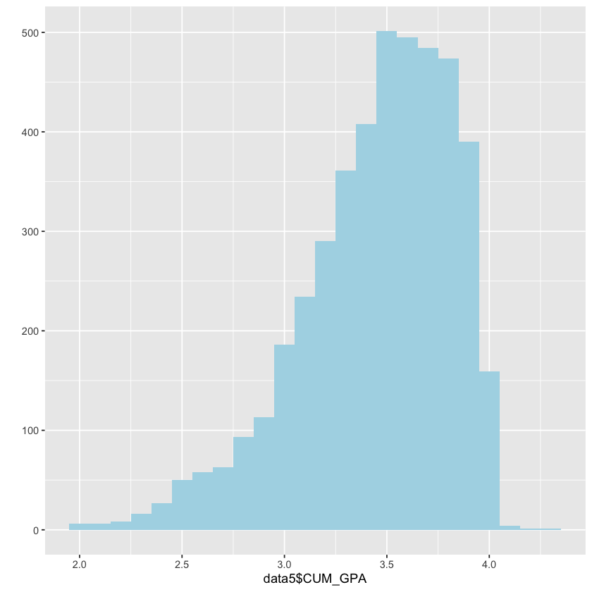

Descriptive Statistics¶
This page provides a summary of demographic characteristics represented in the dataset and the undergraduate student population sampled.
Contents
Sex¶
| Sex | category | percentage | |
|---|---|---|---|
| <int> | <chr> | <dbl> | |
| Female | 3076 | Female | 0.637 |
| Male | 1370 | Male | 0.284 |
| NA | 382 | NA | 0.079 |
Ethnicity¶
| Ethnicity | category | percentage | |
|---|---|---|---|
| <int> | <chr> | <dbl> | |
| White | 3023 | White | 0.626 |
| Asian | 722 | Asian | 0.150 |
| NA | 382 | NA | 0.079 |
| Not Indic | 243 | Not Indic | 0.050 |
| Hispanic | 168 | Hispanic | 0.035 |
| 2 or More | 160 | 2 or More | 0.033 |
| Black | 124 | Black | 0.026 |
| Hawaiian | 3 | Hawaiian | 0.001 |
| Native Amr | 3 | Native Amr | 0.001 |
Course of Study / Major¶
| Major | category | percentage | |
|---|---|---|---|
| <int> | <chr> | <dbl> | |
| NA | 382 | NA | 0.079 |
| (Other) | 343 | (Other) | 0.071 |
| Business Administration BBA | 233 | Business Administration BBA | 0.048 |
| Psychology BA | 221 | Psychology BA | 0.046 |
| Neuroscience BS | 177 | Neuroscience BS | 0.037 |
| Nursing BS Fresh | 142 | Nursing BS Fresh | 0.029 |
| English BA | 141 | English BA | 0.029 |
| Communication BA | 134 | Communication BA | 0.028 |
| Political Science BA | 134 | Political Science BA | 0.028 |
| Biopsych, Cognit & Neurosci BS | 131 | Biopsych, Cognit & Neurosci BS | 0.027 |
| Mechanical Engineering BSE | 114 | Mechanical Engineering BSE | 0.024 |
| Movement Science BS | 110 | Movement Science BS | 0.023 |
| Computer Science BSE | 98 | Computer Science BSE | 0.020 |
| Economics BA | 98 | Economics BA | 0.020 |
| Chemical Engineering BSE | 91 | Chemical Engineering BSE | 0.019 |
| Industrial & Oper Eng BSE | 91 | Industrial & Oper Eng BSE | 0.019 |
| History BA | 82 | History BA | 0.017 |
| International Studies BA | 82 | International Studies BA | 0.017 |
| Sociology BA | 72 | Sociology BA | 0.015 |
| Brain,Behavior & Cognit Sc BS | 68 | Brain,Behavior & Cognit Sc BS | 0.014 |
School¶
| School | category | percentage | |
|---|---|---|---|
| <int> | <chr> | <dbl> | |
| Literature, Science & the Arts | 2640 | Literature, Science & the Arts | 0.547 |
| Engineering | 724 | Engineering | 0.150 |
| NA | 382 | NA | 0.079 |
| Ross School of Business | 261 | Ross School of Business | 0.054 |
| Kinesiology | 162 | Kinesiology | 0.034 |
| Nursing | 161 | Nursing | 0.033 |
| Music, Theatre & Dance | 114 | Music, Theatre & Dance | 0.024 |
| Stamps School of Art & Design | 88 | Stamps School of Art & Design | 0.018 |
| Education | 74 | Education | 0.015 |
| Public Policy | 56 | Public Policy | 0.012 |
| Architecture & Urban Planning | 38 | Architecture & Urban Planning | 0.008 |
| Social Work | 27 | Social Work | 0.006 |
| Information | 26 | Information | 0.005 |
| Public Health | 19 | Public Health | 0.004 |
| Pharmacy | 17 | Pharmacy | 0.004 |
| Medicine | 14 | Medicine | 0.003 |
| Law | 8 | Law | 0.002 |
| Art & Des & Mus, Theat & Dance | 4 | Art & Des & Mus, Theat & Dance | 0.001 |
| Dental Hygiene | 3 | Dental Hygiene | 0.001 |
| Dentistry | 3 | Dentistry | 0.001 |
| Environment and Sustainability | 3 | Environment and Sustainability | 0.001 |
| Business Admin & Engineering | 2 | Business Admin & Engineering | 0.000 |
| Information & Public Health | 2 | Information & Public Health | 0.000 |
Parents’ Education Level¶
| parented | category | percentage | |
|---|---|---|---|
| <int> | <chr> | <dbl> | |
| Master's | 1439 | Master's | 0.298 |
| Bachelor's | 1279 | Bachelor's | 0.265 |
| Ph.D or professional degree | 1051 | Ph.D or professional degree | 0.218 |
| High school diploma or equivalent | 468 | High school diploma or equivalent | 0.097 |
| NA's | 286 | NA's | 0.059 |
| Associate's | 240 | Associate's | 0.050 |
| Other | 65 | Other | 0.013 |
Family Income¶
| income | category | percentage | |
|---|---|---|---|
| <int> | <chr> | <dbl> | |
| $50,000-$100,000 | 1400 | $50,000-$100,000 | 0.290 |
| $100,001-$150,000 | 1271 | $100,001-$150,000 | 0.263 |
| More than $150,000 | 1178 | More than $150,000 | 0.244 |
| Less than $50,000 | 645 | Less than $50,000 | 0.134 |
| NA's | 334 | NA's | 0.069 |
High School Size¶
| hssize | category | percentage | |
|---|---|---|---|
| <int> | <chr> | <dbl> | |
| 1001-2000 | 1674 | 1001-2000 | 0.347 |
| 500-1000 | 1008 | 500-1000 | 0.209 |
| Less than 500 | 856 | Less than 500 | 0.177 |
| 2001-3000 | 765 | 2001-3000 | 0.158 |
| NA's | 289 | NA's | 0.060 |
| More than 3001 | 236 | More than 3001 | 0.049 |
High School Type¶
| hstype | category | percentage | |
|---|---|---|---|
| <int> | <chr> | <dbl> | |
| Traditional public | 3428 | Traditional public | 0.710 |
| Private religious | 502 | Private religious | 0.104 |
| NA's | 287 | NA's | 0.059 |
| Private non-religious | 250 | Private non-religious | 0.052 |
| Public magnet | 228 | Public magnet | 0.047 |
| Public charter | 97 | Public charter | 0.020 |
| Other | 27 | Other | 0.006 |
| Home school | 9 | Home school | 0.002 |
High School Location¶
| hslocation | category | percentage | |
|---|---|---|---|
| <int> | <chr> | <dbl> | |
| Suburban | 3258 | Suburban | 0.675 |
| Urban | 671 | Urban | 0.139 |
| Rural | 613 | Rural | 0.127 |
| NA's | 286 | NA's | 0.059 |
## Grade Point Average
Min. 1st Qu. Median Mean 3rd Qu. Max.
2.008 3.237 3.514 3.451 3.732 4.301
